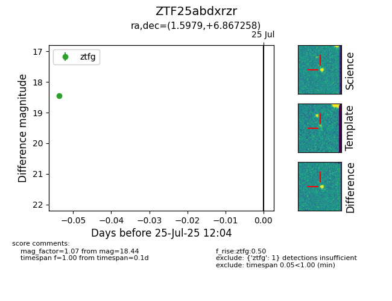

Target ZTF25abdxrzr at 2025-07-25 12:04, see:
FINK: fink-portal.org/ZTF25abdxrzr
Lasair: lasair-ztf.lsst.ac.uk/objects/ZTF25abdxrzr
ALeRCE: alerce.online/object/ZTF25abdxrzr
alt names
ZTF25abdxrzr (ztf,fink)
coordinates:
equatorial (ra, dec) = (1.5979,+6.86726)
galactic (l, b) = (103.5267,-54.29852)
photometry
last ztfg=18.44
1 ztfg detections
